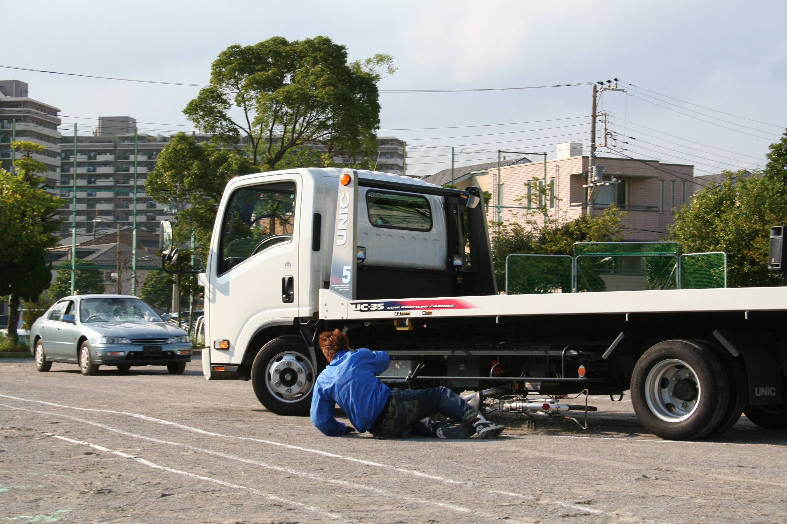

スケアード・ストレート教育技法
EDUCATIONAL METHOD
恐怖の直視による抑止効果
「スケアード・ストレート（Scared Straight）」とは、恐怖を直視させることによって、危険行為を未然に防ぐ教育手法です。
自転車交通安全教室においては、スタントマンが実際の交通事故現場を再現します。
自動車と自転車が衝突する際の「衝撃音」や、事故直後の「無残な状況」を目の当たりにすることで、
生徒の心に「事故への恐怖心」を芽生えさせ、
交通ルール遵守の必要性を自発的に理解させます。
一般社団法人ジャパンアクションギルドの強み
- 映画・ドラマ等の撮影現場で培った高度なスタント技術
- 徹底した安全管理体制（リハーサル・導線確認の徹底）
- 警察官による講話と連携した、教育的シナリオの構築
 スタント実演イメージ
スタント実演イメージ

警察・行政との連携